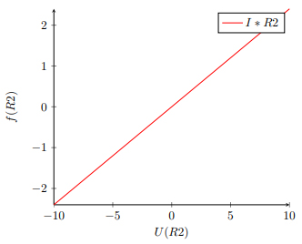
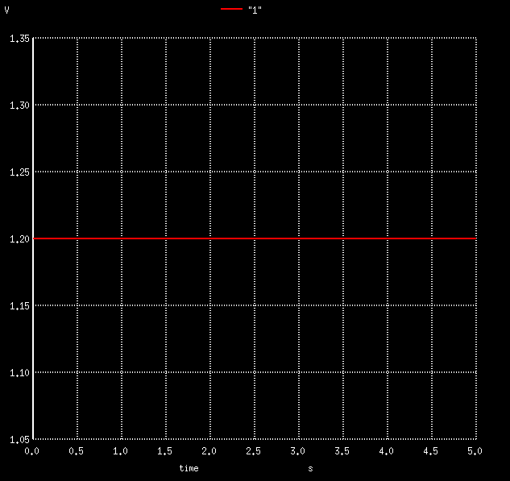

arif.mammadov
March 2018
[scale=1.2, every node/.style=transform shape] (0,0) to[battery=V ] (0,4) to[resistor=R1] (6,4) to[resistor=R2] (6,0) – (0,0) ;
| R1 | 2 |
| R2 | 3 |
| V1 | 1.2 |
| UR1 | 0.48 |
| UR1 | 0.72 |
1
In this section we opened Gschem program with help of command ”gschem”. Then we created the circuit based on digits on our ID
With the help of ngspice we declared time to see our values in a graphical form. Then we got our graphs by the function ”plot”.
2
Since it was optional to do this part, I have skipped this section.
3
[1] The program for drawing circuits
[2] The program for plotting functions and circuits
4